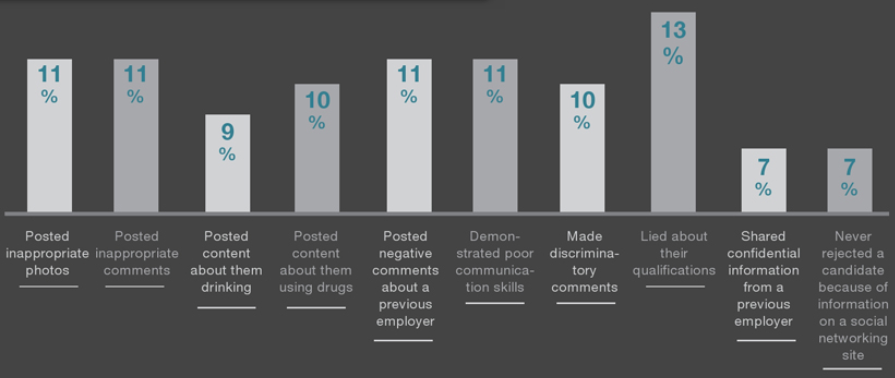
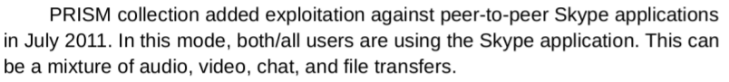
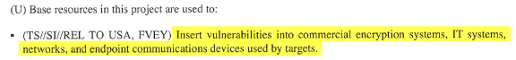
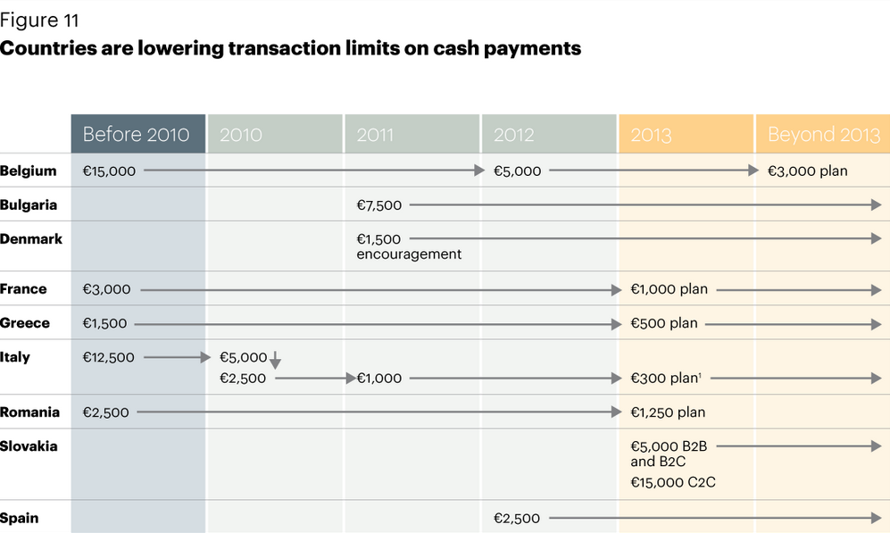

Technologiczne niewolnictwo
- Internet -- Google -
- Portale społecznościowe -
- Komunikacja i szyfrowanie -
- Bankowość elektroniczna -
- Kamery -
- Technologie przyszłości -
- Kulminacja systemu kontroli -
Technologia jest nieodłączną częścią cywilizacji, która w ekspresowym tempie zmieniła cały świat. Otworzyła drzwi, które bez niej nie mogłyby być nawet uchylone. Dzięki niej możemy np. przekazywać informacje w kilka/naście sekund przez cały świat; komunikować się na bieżąco z osobami z innego kontynentu; przemieścić się na drugi koniec Ziemi w jeden dzień; zapisać tysiące zdjęć na dysku wielkości kciuka; tworzyć wirtualne rzeczywistości; zbierać i modyfikować praktycznie nieograniczoną ilość informacji; i robić niezliczoną (i ciągle zwięĸszającą się) ilość innych rzeczy, których chociażby 100 lat temu nikt by sobie nie wyobraził.
"Nie wszystko złoto, co się świeci". W dzisiejszym świecie, tworzeniem i rozwojem technologii kierują różne organizacje, które nie mają skrupułów przed użyciem jej ogromnych możliwości przeciw nam. Pogdląd i analiza naszej komunikacji, kontrola dostarczanych nam informacji, manipulacja emocjami, modyfikacja zachowania - to jedne z wielu aspektów, do których dzisiaj używana jest technologia. Wszystko to z coraz większym zasięgiem, dokładnością, efektywnością i coraz mniejszym wkładem ludzkiego wysiłku. Jeśli ten "postęp" nie zostanie zatrzymany, znajdziemy się niedługo w świecie tak niewolniczym, jakiego nie moglibyśmy spotkać nawet w najstraszniejszych koszmarach.
Poniżej opiszę w jaki sposób najważniejsze technologie prowadzą do powstania globalnego systemu kontroli, wspomnę o kilku "nowinkach technicznych", a także spróbuję połączyć wszystkie informacje znajdujące się w tym artykule i przewidzieć losy tego świata. Zacznijmy od jednego z najczęściej używanych i najbardziej wpływających na ludzkie życie wynalazków - internetu.
Internet
Każde wykonane połączenie, czyli np. wysłanie wiadomości lub wejście na jakąkolwiek stronę, przechodzi przez Twojego dostawcę internetu, zanim dotrze do celu. Teoretycznie oznacza to możliwość przeglądu oraz dowolnej modyfikacji przesłanej treści; np. spowolnienie/blokada pobierania torrentów; doklejanie reklam do pobranych stron internetowych http://zmhenkel.blogspot.com/2013/03/isp-advertisement-injection-cma.html (archiwum), lub stworzenie masowego systemu cenzury, blokującego materiały antyrządowe, takiego jak w Chinach.
Najczęściej wykonywaną czynnością przez internet jest wchodzenie na strony, do której używamy przeglądarki takiej jak Firefox, Internet Explorer lub Google Chrome. Tych trzech "gigantów" jest wręcz stworzone po to, aby zbierać dane o swoich użytkownikach. Google przynajmniej przynaje się do tego, za to Mozilla reklamuje się jako firma dająca użytkownikom "wolność i kontrolę", a tak naprawdę ich szpieguje i kontroluje. Już kilka lat temu do Firefoxa została dodana możliwość blokowania przez Mozillę wtyczek, niby aby "chronić użytkowników", ale nic nie stoi na przeszkodzie, aby np. uniemożliwić używanie AdBlocka. Mozilla od dawna współpracuje z reklamodawcami, nawet dodali je do panelu nowej karty: https://blog.mozilla.org/advancingcontent/2015/05/21/providing-a-valuable-platform-for-advertisers-content-publishers-and-users/ (archiwum). Mit Firefoxa szanującego użytkownika upadł i się już nie podniesie. Wystarczy przeczytać pewną wypowiedź na ich stronie: Our products do not interrupt the browsing experience; they catch users when they are most receptive to seeing new information.
- Nasz produkt (tzn. te reklamy w nowo otwartych kartach) nie przeszkadza w przeglądaniu internetu; łapią użytkowników kiedy ci są najbardziej podatni na nowe informacje
. Jesteś dla nich kimś, kogo trzeba "złapać" i wepchnąć do mózgu reklamy w sposób który Tobie łaskawie nie przeszkodzi we wchodzeniu na strony. Mozilla stała się centralnym punktem dostarczania reklam użytkownikom; mimo tego nadal, bez żadnego wstydu, wyśpiewuje idiotyczne slogany o szacunku i wolności. Możnaby przeznaczyć cały artykuł na wyszczególnienie wszystkich sposobów w jaki popularne przeglądarki szpiegują i kontrolują użytkowników. Jednym z nawiększych winowajców jest Opera, która wysyła do swojej bazy danych całą Twoją historię przeglądania, bez Twojej wiedzy. "Trzej giganci" też zbierają dane, ale w inny sposób.
Prawie każda duża strona wspópracuje także z policją i służbami i chętnie podzielą się z nimi informacjami dotyczącymi Ciebie, takimi jak np. adres IP komputera z którego napisałeś wiadomość na forum. Wyjątki, takie jak Lavabit (swoją drogą, bardzo ciekawa historia, zdecydowanie warta przeczytania) lub The Pirate Bay, dostają najazdy na swoje bazy serwerów.
Ostatnio pojawiła się "moda" na przechowywanie swoich danych na "dyskach w chmurze", które oferują np Dropbox lub Google Drive. Jest to bardzo na rękę elitom - pozwala im na przeglad i analizę Twoich plików, co może dać im informacje o Twoich zainteresowaniach, planach, które kiedyś mogą zostać użyte przeciwko Tobie. Pewnej osobie z 4chana serwis Dropbox skasował jego PDFy z instrukcjami składania bomb. Internet jest pełny podobnych sytuacji, niekoniecznie dotyczących bomb; widzimy więc, że Twoje dane na "dyskach w chmurze" nie są bezpieczne. Tracisz nad nimi kontrolę - nie są już "Twoje". Prawdopodobne jest, że za kilkanaście lat chęć trzymania danych "na swoim" będzie uważana za nienormalną, a "dyski w chmurze" będą standardem - tak jak jest teraz np. z kontami bankowymi. Otworzy to drzwi do totalnej kontroli rodzaju składowanych danych, automatycznie blokując chociażby materiały o wyżej wymienionych bombach, Inną, może nawet bardziej prawdopodobną opcją, byłoby dodawanie osób ściągających takie treści do listy niebezpiecznych, i szpiegowanie ich bezpośrednio, lub karanie - tak jak już robili to producenci filmów z niektórymi torrentami.
Zastanówmy się - w jaki sposób ludzie wyszukują interesujących ich informacji w internecie? Najprawdopodobniej używając Google. Google jest jednak czymś więcej niż tylko wyszukiwarką - to firma której celem jest zebranie jak największej ilości danych o Tobie i stworzenie z nich Twojego "profilu". Ich skrypty szpiegowskie (np. google analytics) znajdują się praktycznie na każdej stronie internetowej - możesz nie wiedzieć co to jest Google, a i tak być przez nich profilowanym. Informacje te są później używane do wyświetlania reklam dostosowanych pod Ciebie - lecz także do modyfikacji wyników wyszukiwania. Co to oznacza w praktyce? Jeśli według algorytmu Google jesteś chrześcijaninem, dostaniesz inne wyniki wpisując hasło "aborcja" niż np. ateista.
Google posunęło się jednak jeszcze dalej - wymyślili nowy sposób wyświetlania kolejności stron w wyszukiwarce. Te, które według ich nowego algorytmu, zawierają informacje oparte na faktach - będą wyżej. Te ocenione jako bzdury - niżej. Jednym ze sposobów, w jaki Google ma oceniać "prawdziwość" stron, jest porównywanie ich z artykułami na Wikipedii. Wiemy jaki stosunek ma Wikipedia do teorii spiskowych - możemy więc przewidzieć iż zostaną wypchnięte przez oficjalne wersje wydarzeń. Niedługo, wpisując hasła takie jak np. "Smoleńsk", "globalne ocieplenie", lub "genetycznie modyfikowane organizmy" będziemy dostawać jedynie informacje spreparowane. Wynalazek Google może okazać się najskuteczniejszym narzędziem cenzury i kontroli opinii społecznej.
Wiele często używanych internetowych usług jest kontrolowanych przez Google. Najpopularniejszą z nich jest bez wąŧpienia YouTube, które na przestrzeni lat było przez nich "reformowane". Nieźle się zdziwiłem (choć może nie powinienem był), kiedy kilka lat temu, podczas próby zalogowania się, powitała mnie "prośba" o założenie konta na Gmail (bez którego nie miałem możliwości zalogowania się). Nie chciałem oczywiście "korzystać" z ich szpiegowskiego E-maila (maile wysyłane z-, lub do, Gmail, są automatycznie skanowane), musiałem więc zrezygnować z YouTube - nie żebym się tam zbytnio udzielal, ale jednak to jakaś strata.
Inną "reformą" na YouTube jest Content ID - program teoretycznie mający zapobiegać łamaniu praw autorskich. Firma produkująca np. filmy lub muzykę może zarejestrować się w nim i wysłać im plik z częścią swojego dzieła, które później zostanie automatycznie porównane z każdym filmikiem wysyłanym do YouTube. Podczas wykrycia podobieństwa między którymś nagraniem a plikiem nadesłanym przez uczestnika, Content ID automatycznie wyciągnie konsekwencje wcześniej przez niego ustalone. Do wyboru są kasacja, wyciszenie (usunięcie muzyki), lub dodanie do niego reklam. Jak działa to w praktyce?
- Nintendo wstawiło reklamy do filmików pokazujących niektóre ich gry http://www.destructoid.com/nintendo-is-claiming-ownership-of-let-s-play-videos-253793.phtml (archiwum)
- Pewna osoba umieściła filmik w którym słychać było śpiewy ptaków. Content ID wykryło w nim chronioną prawem autorskim piosenkę i zaśmieciło reklamami z których pieniądze płynęły do kieszeni autorów nieistniejącej piosenki: https://www.techdirt.com/articles/20120227/00152917884/guy-gets-bogus-youtube-copyright-claim-birds-singing-background.shtml (archiwum)
- Wielka korporacja czerpała zysk z reklam umieszczonych na czyjejś własnej muzyce: https://www.techdirt.com/articles/20150317/10513630347/umg-licenses-indie-artists-track-then-uses-content-id-to-claim-ownership-it.shtml (archiwum)
Zanim powstało Content ID, ktoś kto uważał, że jakiś filmik na YouTube łamie prawa autorskie, musiał wysłać stosowny formularz, który mógł być zaakceptowany lub nie. Dzisiaj mają jednak znacznie prostszą możliwość rejestracji w Content ID, pozwalającą im na zarobienie pieniędzy na każdym filmiku który zawiera (lub nie, patrz przykłady wyżej) nawet skrawek "ich" nadesłanego pliku. Teoretycznie można się odwołać od "decyzji" tego programu; nie ma to jednak sensu, gdyż rozpatrywane są one przez...tą samą firmę, której dzieło zostało wykryte w Twoim filmiku. Wiele sfrustrowanych ludzi wylewa swoje żale w internetowych komentarzach (chociażby pod przykładami, które podałem), narzekając jaki ten program straszny, że źle oznaczył ich filmik, że im kradną, że stracili swoje nagrania lub swoje konto; rozległy się wielkie debaty na temat praw autorskich i czy powinny być automatycznie egzekwowane. Inni odpowiadali, że twórcy powinni się cieszyć z popularności ich gier/muzyki na youtube. Powód istniena tych wszystkich dyskusji jest jednak tylko jeden - istnienie Content ID. Bez niego, niezależnie od czyjegos widzimisię, ludzie mogliby swobodnie dzielić się nagraniami; możliwość automatycznej analizy ingeruje w to.
Podobny program mógłby być użyty do usuwania filmików o tematach niepożądanych. Już teraz YouTube kasuje filmy np. "rasistowskie", "nacjonalistyczne", "obraźliwe" (mimo, iż nie zawsze są one rzeczywiście takie - są to jednak dobre wymówki) - musi jednak robić to ręcznie. Połączenie algorytmu do sortowania stron z Content ID mogłoby jednak zaowocować systemem, który robi to automatycznie. Bardziej zaawansowana forma takiego algorytmu mogłaby nawet selektywnie ciąć filmiki w których znajdują się niechciane treści (np. kasując kilkusekundowy odcinek z "rasistowskim" wyzwiskiem). Działałoby to na zasadzie filtru przekleństw na forach. Jednak nie byłoby ograniczone tylko do tego - Google pokazało już, że jest bardzo zainteresowane kontrolą Twoich poglądów, tworząc algorytm o którym pisałem wcześniej. Narzędzie, które może wykryć w którym momencie filmiku zostaje poruszany temat np. GMO, i skasować to lub zamienić na spreparowaną wersję, będzie bardzo mile widziane w ich arsenale.
O Google możnaby napisać cały artykuł; nie mam zamiaru tego robić - wspomnę jednak jeszcze o kilku innych rzeczach którymi się zajmują (lub zajmowali). Recaptcha jest najpopularniejszym systemem ochrony forów przed spambotami (programami stworzonymi po to aby automatycznie dodawać tematy z np. reklamami). Żeby napisać coś na forum z recaptchą, trzeba było trafnie przepisać podany przez Google wyraz. Nie zawsze do wpisania dany był jednak zwykły wyraz - można było dostać np. adres ulicy, który potem był użyty w ich szpiegowskim StreetView. Przez lata, każdy kto pisał np. na 4chanie, zasilał ich bazę danych adresami, niekoniecznie o tym wiedząc. Czym tak naprawdę jest Street View? Samochody Google jeżdżą po świecie robiąc zdjęcia wszystkiemu i wszystkim. Zdjęcia te idą potem do ich bazy danych, która może być potem przeszukana przez każdego. Google ma dostęp do obrazu praktycznie całej Ziemi - oraz do historii miejsc, których szuka każdy używający ich internetowych map. Strach pomyśleć, do czego te informację mogą być użyte. Na wikipedii można przeczytać, jak wiele krajów miało wątpliwości co do wpływu Street View na prywatność obywateli - jednak po "konsultacjach" wszystkie zezwoliły im robienie tego co chcą. Czyż nie jest to dowodem, iż mamy doczynienia z ogólnoświatowym planem szpiegowania ludzkości?
Google zmieniło sposób, w jaki działa ReCaptcha, od kiedy napisałem powyższą sekcję. Teraz dostajemy zestaw obrazków, i musimy wybrać te zawierające pewien przedmiot, np. hamburgery. Jest to używane do uczenia sztuczniej inteligencji Google, która najprawdopodobniej zostanie także użyta przeciw nam w przyszłości. Pozwolę sobie zakończyć tą sekcję cytatem jednego z pracowników Google: We don't need you to type at all. We know where you are. We know where you've been. We can more or less know what you're thinking about.
- Nie musisz nic pisać. Wiemy gdzie jesteś, gdzie byłeś. Możemy mniej więcej wiedzieć o czym myślisz).
Portale społecznościowe
Jednymi z najpopularniejszych dzisiaj internetowych stron są portale społecznościowe, jak Facebook czy Twitter. Ludzie lgną do nich jak muchy, zasilając ich bazę danych informacjami takimi jak imię, nazwisko, numer telefonu, miejsce pracy, zainteresowania, czy listą znajomych. Nie krępują się także przed dzieleniem się tam swoimi np. politycznymi przekonaniami. Facebook bardzo to ułatwia, gdyż przycisk "Lubię to!" znajduje się wielu popularnych stronach internetowych, a wciśnięcie go wysyła do bazy danych portalu informację o polubionym artykule. Do czego można wykorzystać te informacje? Na przykład to wyświetlania reklam dostosowanych do Twojej historii przeglądanych artykułów. Kilka lat temu, Facebook oświadczył, iż nigdy nie będzie tego robił - zmienił jednak śpiewkę i taki proceder wszedł już w życie. Niektóre z tych reklam mogą być bardzo chamskie i obraźliwe - np. osoba chora na raka, dzień po szukaniu w internecie informacji na temat jego przypadłości, została zasypana reklamami...serwisów pogrzebowych! http://www.naturalnews.com/049386_Facebook_privacy_surveillance.html (archiwum)
Większe zagrożenie płynie jednak z komentarzy pisanych na tych serwisach. Są one przypisane do Twojego imienia i nazwiska, i każdy kto je zna, może sobie Twoje wpisy przeczytać. Czym może to zaoowocować? Np. stratą pracy lub aresztem. Kilka przykładów:
- Pewien człowiek został aresztowany za napisanie na Twitterze słów piosenki heavymetalowego zespołu. Urzędasy dopatrzyli się tam groźby zabicia uczniów/pracowników szkoły i gościu sobie posiedział. Incydent ten został dogłębniej opisany tutaj: https://www.techdirt.com/articles/20140906/13490628443/heavy-metal-lyrics-posted-to-facebook-result-arrest-terrorist-threats.shtml (archiwum)
- Kelnerka straciła pracę 48 godzin po napisaniu na Facebooku komentarza narzekającego na zbyt małe napiwki: http://www.inc.com/news/articles/2010/05/waitress-fired-for-facebook-post.html (archiwum)
Można długo zastanawiać się nad pojedynczymi sytuacjami - czy ktoś został ukarany słusznie, czy nie; niektórzy ludzie mogą nawet obrzucać winą autorów tych wypowiedzi - należy jednak spojrzeć na całość z daleka. Gdyby wyżej wymienione komentarze nie zostały umieszczone w internecie, a wypowiedziane na głos - najprawdopodobniej nic nikomu by się nie stało. Możliwość wyciągnięcia konsekwencji jest skutkiem technologii, która pozwala na przyporządkowanie wszystkiego co powiesz do Twojego imienia i nazwiska. Po latach używania portali społecznościowych, każdemu się może coś wymsknąć i być prędzej czy później użyte przeciwko niemu, nawet jeśli podczas pisania danej wiadomości nie wydawałoby się to.
Spośród 300 przepytanych osób zajmujących się rekrutacją, 91% przyznało się do przeglądania portali społeczniościowych swoich niedoszłych pracowników; 69% z nich nie przyjęło kogoś ze względu na treść ich profilu. Niektórymi z powodów nie zatrudnienia osoby były: negatywne wypowiedzi o poprzednich pracodawcach, komentarze/zdjęcia oznajmiające, iż ktoś bierze narkotyki lub pije alkohol; "nieodpowiednie" zdjęcia.

Są jednak dużo bardziej bezpośrednie sposoby, jakimi serwisy te mogą na Ciebie wpłynąć. W 2014 roku Facebook przeprowadził trwający tydzień psychologiczny eksperyment mający udowodnić możliwość kontroli ludzkimi emocjami bez bezpośredniego kontaktu z nimi, a co za tym idzie, bez ich wiedzy. 689003 osoby (nieświadome bycia królikami doświadczalnymi) podzielono na dwie grupy - jednej z nich usuwano wpisy znajomych oznaczone jako generujące pozytywne emocje, drugiej te negatywne. Analizując statusy osób uczestniczących w eksperymencie, dowiedziono, że im więcej "pozytywnych" wpisów znajomych ktoś widział, tym bardziej pozytywnie sam się wypowiadał. Różnice były małe, ale były; przy bardziej drastycznych środkach, np. automatycznym udostępnianiem artykułow o morderstwach, wypadkach, porwaniach etc. napewno możnaby uzyskać większy efekt. Nic nie stoi na przeszkodzie, aby użyć informacji zebranych o użytkowniku do dokładniejszej, indywidualnej kontroli emocji. Np. ktoś przeglądający często antyrządowe strony mógłby dostawać artykuły o zwiększonych podatkach, aby wywołać u niego konkretną reakcję. Osobę z poglądami anty-GMO możnaby zasypać informacjami o tym jak zostały tu lub tam zalegalizowane, itd...Jest bardzo prawdopodobne, że wyżej opisane doświadczenie było fazą wstępną takiego właśnie procederu. Cały eksperyment można przeczytać tutaj: http://www.pnas.org/content/111/24/8788.full (archiwum)
Facebook ma także algorytm wykrywający twarze na zdjęciach i automatycznie dopisujący do nich imię i nazwisko: http://www.dailydot.com/technology/facebook-deepface-science/ (archiwum). Jeśli Twoje imię widnieje pod przynajmniej jednym zdjęciem, każde inne z Twoja twarzą może zostać wykryte jako Ty.
Komunikacja i szyfrowanie
Z biegiem czasu coraz większa część ludzkiej komunikacji prowadzona jest z użyciem elektroniki. Ma ona taki sam mankament jak konta bankowe - płacisz (np. doładowania do telefonu) za jedną z podstawowych ludzkich czynności; nie jest to jednak najważniejsze. Człowiek rozmawiający w cztery oczy jest spontaniczny - wie, że tylko osoba z którą rozmawia może go usłyszeć. Takie nastawienie jest potem przenoszone do rozmów przez telefon, które niestety kierują się innymi zasadami - dane o tym, z kim, kiedy, gdzie i o czym rozmawiasz zapisywane są w bazie danych dostawcy. W większości krajów są one do wglądu policji jeśli mają nakaz sądowy; jednak Wielka Brytania - niekwestionowany lider elektronicznego szpiegostwa - posunęła się jeszcze dalej; trzy z czterech głównych sieci telefonii komórkowej na bieżąco przesyłają wszystkie te informacje brytyjskiej policji: https://www.bestvpn.com/blog/11360/uk-phone-networks-give-police-automated-access/ (archiwum). Implikacje tego faktu są wręcz gigantyczne - organizacja, która ma możliwość ukarania Cię grzywną lub więzieniem, ma teraz dostęp do wszystkich Twoich rozmów telefonicznych. Można by mnożyć przykłady osób aresztowanych za "nieodpowiednie" SMSy - jednak zwykle musieli przeszukać ich telefony, aby je przeczytać. To wymaganie znika dzięki istnieniu automatycznego systemu przesyłania wiadomości.
Podobna sytuacja ma miejsce przy komunikacji internetowej. Większość ludzi używa do niej "standardowych" narzędzi, takich jak Gmail lub Skype. W jednym z tajnych dokumentów amerykańskich służb bezpieczeństwa (NSA), Edward Snowden ujawnił program PRISM, z którym współpracują firmy tworzące te właśnie programy. Skype, np. od 2011 roku daje dostęp NSA do rozmów wykonanych z jego użyciem, włącznie z nagraniem wideo:
.
Oczywiście, możemy używać mniej popularnych komunikatorów z funkcją szyfrowania; czy da nam to jednak solidną ochronę przed szpiegostwem?
David Cameron, prezes rady ministrów Wielkiej Brytanii, wyszedł z propozycją zakazania szyfrowania wiadomości, argumentując, iż rząd powinien mieć dostęp do każdego rodzaju komunikacji, żeby złapać "terrorystów". "There should be no " means of communication" which "we cannot read" - "Nie powinno być sposobu porozumiewania się, którego nie możęmy odczytać."Wiele ludzi piszących komentarze na ten temat śmiało się, że rządy będą musiały skasować programy szyfrujące z dysków twardych każdego, kto ich używa. Inni uznali, że uniemożliwiłoby to bezpieczne używanie, np. bankowości elektroniczniej, więc nie ma szans zaistnieć. Wygląda mi to jednak na desperacką próbę odrzucenia faktu, iż w niedalekiej przyszłości każda nasza rozmowa prowadzona elektronicznie może być do wglądu wścibskich urzędasów.
W innym wycieku NSA, ujawniona została ich chęć do osłabienia powszechie używanych sposobów szyfrowania: 
Nie trzeba mieć jednak "wtyki" w konkretnym oprogramowaniu, aby szpiegować nasze rozmowy. Nawet w programach z otwartym źródłem (czyli takich, które każdy z odpowiednią wiedzą może przeanalizować, aby sprawdzić, czy nie zawiera on jakichś luk w zabezpieczeniach) zdarzają się błędy które mogą pozwolić na odszyfrowanie wiadomości. OpenSSL, najpopularniejsza biblioteka szyfrująca połączenia ze stronami internetowymi, przez półtora roku posiadała błąd pozwalający na pobranie małej ilości danych z pamięci serwera na którym jest ona używana, do których mogły należeć hasła oraz klucze szyfrujące. NSA, oczywiście, skorzystała z tego: https://www.bloomberg.com/news/articles/2014-04-11/nsa-said-to-have-used-heartbleed-bug-exposing-consumers (archiwum) Inna sytuacja - Cryptocat, wtyczka do przeglądarki pozwalająca na "bezpieczną" komunikację, zepsuła implementację algorytmu szyfrującego, znacznie ułatwiając podgląd komunikacji komuś, kto ma odpowiednie możliwości. Takie jak NSA, z której tajnych dokumentów wynika, iż zapisują wszystkie szyfrowane połączenia, aby móc je później odszyfrować..
I najprawdopodobniej uda im się to - jest duża szansa, iż komputery kwantowe zniwelują wszystkie dotychczasowe szyfry - https://hackaday.com/2015/09/29/quantum-computing-kills-encryption/ (archiwum) - więc prywatne rozmowy staną się niedługo zabytkiem muzealnym. Dodajmy do tego rozwijające się programy rozpoznające mowę, i znalezienie się w świecie, w którym każda nasza rozmowa jest przeszukiwana pod kątem wybranych zwrotów (przez program podobny do wcześniej opisanego Content ID), jest tylko kwestią czasu.
Bankowość elektroniczna
Płatność pięniedzmi papierowymi jest coraz częściej wypierana przez elektroniczną. Ludzie cenią sobie jej wygodę - można zamówić sobie praktycznie wszystko, i zapłacić kilkoma kliknięciami, bez wychodzenia z domu. Posiadanie konta bankowego jest w dzisiejszych czasach czymś normalnym, wręcz wymaganym. Pod kurtyną kryją się jednak ogromne implikacje dla prywatności i wolności człowieka.
Zacznijmy od podstaw - czym są "pieniądze" elektroniczne? Są numerkiem w bazie danych znajdującej się na serwerze należącym do banku którego używasz. Od wysokości tego numerka zależy Twoja możliwość kupywania czegokolwiek - a że człowiek musi np. jeść, Twoje życie jest w dużej mierze od niego zależne. Na ilość "Twoich" elektronicznych "pieniędzy" może wpłynąć wiele czynników od Ciebie niezależnych. Od prowadzenia konta zwykle pobierana jest opłata; samo uczestniczenie w elektronicznym systemie bankowości oznacza więc automatyczną stratę pieniędzy.
Bank może jednak "zjeść" znacznie więcej - nawet nie biorąc pod uwagę ataków hakerskich takich jak: https://thehackernews.com/2016/05/swift-banking-hack.html (archiwum), dzięki któremu hakerzy ukradli 12 milionów dolarów. Pewnej osobie z Cypryjskim kontem bankowym komisja europejska zablokowała 720 000 Euro aby spłacić długi państwa. Musiał on zwolnić wszystkich Cypryjskich pracowników ze swojej firmy i przenieść się do innego kraju. Na początku ta kwota wyświetlona była jako "blocked", później jednak całkowicie zniknęła z jego konta. I, jak on sam mówi, "Thousands of other companies around Cyprus have the same situation." - "tysiące innych Cypryjczyków są w tej samej sytuacji." Doskonale pokazuje to trwałość numerka w bazie danych - wystarczy jedno czyjeś widzimisię żeby uciąć w nim jedno lub kilka zer. Polska, oczywiście, też ma "dług publiczny" - jest więc pretekst do usunięcia pieniędzy komuś niewygodnemu. Więcej o tym incydencie można przeczytać tutaj: https://bitcointalk.org/index.php?topic=160292 (archiwum) (71-stronowy temat, w języku angielskim).
Innym mankamentem elektronicznych płatności jest ich wpływ na Twoją prywatność. Wszystkie transakcje i przelewy zapisywane są w bazie danych banku. Sytuacja się pogarsza, jeśli spojrzy się na fakt, iż ludzie kontrolujący bank mają możliwość użycia tych danych przeciwko Tobie - np. blokując niepożądane transakcje, takie jak kupno bitcoinów: http://www.coindesk.com/dutch-bank-rabobank-blocks-bitcoin/ lub dotacje do WikiLeaks: http://www.bankrate.com/finance/credit-cards/naughty-things-credit-card-wont-buy-6.aspx (archiwum). Nietrudno wyobrazić sobie sytuację, kiedy wszystkie potencjalne elektroniczne transakcje są analizowane i automatycznie blokowane według listy niepożądanych przedmiotów/odbiorców.
Papierowe pieniądze nie mają za to tych wad. Nie znikną Ci zdalnie z kieszeni. Nie ma centralnego punktu w którym Twoje transakcje są zapisywane i analizowane. Nie można za ich pomocą "wyłączyć" kogoś - jeśli ktoś nie chce Ci czegoś sprzedać, możesz iść gdzieś indziej. Są narzędziem wolnego człowieka - dlatego elity mają je na celowniku.
Ale przecież nadal można używać papierowych pieniędzy, prawda? Może już niedługo - program przyzwyczajania ludzkości do płatności elektronicznych jest wdrażany już od dłuższego czasu. Reklamy kont bankowych są jednymi z najczęściej puszczanych w telewizji. Coraz więcej pracodawców wymaga posiadania konta. Limity wysokości transakcji papierowymi pieniędzmi są obniżane na całym świecie:
.
Czy w końcu spadną do zera? W wielu miejscach już tak jest; np. za przejazdy autobusami w Londynie od prawie 3 lat nie można już placić papierowymi pieniędzmi. Liczba tych miejsc będzie się stale zwiększać, i ludzie będą powoli zaplątywani w elektroniczną sieć niewolnictwa.
Aktualizacja 2017: od napisania powyższej sekcji, sytuacja znacznie się pogorszyła. Np. w Szwecji, płatności są już praktycznie całkowicie elektroniczne: https://www.theguardian.com/business/2016/jun/04/sweden-cashless-society-cards-phone-apps-leading-europe (archiwum) Swedish buses have not taken cash for years, it is impossible to buy a ticket on the Stockholm metro with cash, retailers are legally entitled to refuse coins and notes, and street vendors – and even churches – increasingly prefer card or phone payments.
- Szwedzkie autobusy nie przyjmują papierowych pieniędzy od lat, nie można kupić biletu do Sztokholmskiego metra za papierowe pieniądze, sklepy nie chcą przyjmować monet oraz papierowych pieniędzy, a sprzedawcy uliczni, a nawet kościoły - coraz bardziej wolą płatności telefoniczne lub kartą
.
8 listopada 2016, premier Indii unieważnił dwa banknoty o najwyższej wartości, co zwiększyło częstotliwość płatności kartami debetowymi o 108%. W radiu powiedział on Less-cash first, cashless society next
- Najpierw mniej papierowych pieniędzy, potem - całkowita z nich rezygnacja
. Jest wiele przykładów dotyczących innych państw, takich jak Dania, USA, etc. Nie ma wątpliwości, iż mamy doczynienia z ogólnoświatowym planem usunięcia papierowych pieniędzy.
Kamery
Zdecydowanie najpotężniejszą bronią technologicznego systemu kontroli są kamery. O ile całej reszty można z większym lub mniejszym trudem uniknąć (przynajmniej na razie), o tyle kamery działają, po prostu istniejąc. Stopniowo montowane były one w coraz to większej ilości miejsc - od sklepów i szkół do ulic, autobusów i klatek schodowych; można założyć, iż gdziekolwiek się nie ruszysz, twoje życie jest pogdlądane, zapisywane, analizowane przez obcych Ci ludzi. Jak bardzo zależy urzędasom na rejestrowaniu każdego Twojego ruchu? Bardzo. Pewnego dnia widziałem, jak "wandale" rozjebały kamerę obserwującą miejsce, gdzie lubili się codziennie spotykać. Następnego dnia była już tam spowrotem, cała i zdrowa. Widzimy więc, że szpiegostwo jest priorytetem numer 1 dla urzędasów; nie może być ani minuty, w której nie będziesz nagrywany.
Istnienie systemu szpiegowskiego całkowicie zmienia relacje pomiędzy normalnymi ludźmi a elitami z dostępem do kamer. Nie można czuć się swobodnie, wiedząc, że każdy Twój ruch możę być pogdlądany przez niewidzialnego szpiega który ma możliwość wyciągnięcia wobec Ciebie konsekwencji. Większość ludzi nie wydaje się jednak być zbytnio przejęta tym stanem rzeczy. Zachowują się jakby nigdy nic, chodzą szpiegowanymi ścieżkami, kupują w "obiektach monitorowanych", wysyłają swoje dzieci do okamerowanych szkół. Niektórzy nawet cieszą się że ktoś ich podgląda, powtarzając jakieś pierdoły o "bezpieczeństwie", lub inne wymówki nie mające żadnego pokrycia w rzeczywistości. Jednak to dopiero początek - wpływ tego systemu będzie się coraz bardziej zwięĸszał, aż w końcu nie będzie można żyć tak jak do tej pory i nie zwracać na niego uwagi. Jaka jest więc następna faza tego systemu?
Nowoczesne kamery posiadają więcej możliwości niż zwykłe rejestrowanie obrazu i zdanie się na ocenę człowieka. Należą do nich śledzenie człowieka na przestrzeni kilku kamer, wykrywanie twarzy, oznaczania według płci lub innych kryteriów:
. Inną rzeczą, które one potrafią, jest automatyczna analiza Twojego zachowania i potencjalne potraktowanie go jako podejrzane. W wielu miejsach na świecie takie kamery są już stosowane, np.w Indiach http://www.nice.com/nanded-india-deploys-nice-safe-city-solution-protect-citizens-visitors-and-historical-sites (archiwum), Glasgow http://finance.yahoo.com/news/nice-safe-city-solutions-deployed-110000131.html (archiwum), lecz także w Katowicach http://katowice.naszemiasto.pl/artykul/katowicki-inteligentny-system-monitoringu-i-analizy-czyli,2656606,artgal,t,id,tm.html (archiwum).
Wprowadzenie takiego systemu tworzy z nas absolutnych niewolników. Cechą charakteryzującą "inteligentny monitoring" jest centralny punkt, w którym wszystkie dane są analizowane, np. policja (czyli podobnie, jak z rozmowami telefonicznymi w Wielkiej Brytanii). Jednym z "podejrzanych zachowań" podanych jako przykład w broszurze jednego z producentów kamer było wyciąganie z kieszeni pistoletu, jednak ludzie obsługujący te urządzenia mogą oznaczyć jako "podejrzane" co chcą. Spójrzmy chociażby na niektóre z isntniejących w Polsce zakazów: handlu ulicznego, karmienia ptaków, zakrywania twarzy, wyprowadzania psów, jazdy bez zapiętych pasów, itd; zdarza się, że ludzie zostają ukarani za złamanie ich. Aby tak się stało, trzeba jednak zostać zauważonym przez kogoś, kto może taką karę wyegzekwować. Automatyczny system analizy naszych zachowań eliminuje to wymaganie; pozwala na wyciągnięcie konsekwencji od każdego, za jakikolwiek wymysł psychopatycznych urzędasów.
Wyobraź sobie, że idziesz sobie alejką naszpikowaną takimi kamerami, razem z setką innych ludzi. Odruchowo rzucasz na chodnik papierek bo zjedzonym batoniku. Kamera zauważyła to i przypisała Ci grzywnę 200 zł za zaśmiecanie. Twoja twarz zostaje rozpoznana w tym tłoku i cała przebyta przez Ciebie droga jest na bieżąco przekazywana policji. Kilka minut później widzisz nadjeżdżający radiowóz; instynktownie próbujesz znaleźć miejsce bez kamer, takiego jednak nie ma, a nawet jakby było, znaleźli by Cię. Wiesz, że nie unikniesz już kary, więc poddajesz się i płacisz. Tak, jak wszyscy inni ludzie, którzy idąc obok Ciebie dokonali tego przestępstwa. O ile teraz może wydawać się to śmieszne, technologia potrafiąca to już istnieje (np. nice city solutions), kwestią jest tylko jej wprowadzenie - które jest celem władzy na całym świecie. Broszury reklamujące inteligentne kamery mówią wprost - tłok, zakrycie twarzy, zmiana ubrań, zmiana miejsca, itp. nie uratują Cię. O ile ludzie, po wprowadzeniu takiego systemu, będą próbować szukać sposobów oszukania go (i napewno jakieś znajdą), algorytmy tych kamer będą ciągle się rozwijać, aż w końcu obejście wykrycia przewyższy możliwości i motywację większosci ludzi.
Technologie przyszłości
Jest wiele innych narzędzi, będących w początkowej fazie implementacji, które w przyszłości zasilą ten system. Praktycznie każda nowinka techniczna ma potencjał do bycia jego częścią (lub nawet jest tworzona z myślą o tym), postaram się jednak pokrótce opisać te najważniejsze, najgroźniejsze.
Chipy podskórne
Masowo w Polsce i na świecie wszczepiane psom, "aby móc ich znaleźć", mają zdecydowanie najbardziej destrukcyjny potencjał. Kampania nakłaniająca ludzi do zachipowania swoich pupili ma na celu tylko i wyłącznie oswojenie ich z ideą chipowania, po której nadejdzie pora na ludzi. W niektórych barach i miejscach pracy na świecie są już używane do np. otwierania drzwi; po odpowiedniej kampanii propagandowej będą wstrzykiwane każdemu narodzonemu dziecku. Zastąpią one dowody ososbiste, karty bankomatowe i inne dzisiejsze dokumenty; będą powoli lecz stanowczo wymagane w coraz większej ilości miejsc. Ludzie będą o nie błagać, bo bez nich podstawowe czynności, takie jak zakupy, nie będą możliwe. Dlaczego urzędasy tak bardzo chcą, aby ludzie się zachipowali? Bo pozwoli im to na stworzenie gigantycznej, elektronicznej bazy danych z czasem i miejscem pobytu każdego człowieka. System ten został już wprowadzony na mniejszą skalę w niektórych amerykańskich szkołach: http://www.alternet.org/civil-liberties/kids-tagged-rfid-chips-creepy-new-technology-schools-use-track-everything-kids-do (archiwum). Dzieci noszą na szyi identyfikatory z wszczepionymi chipami, które na bieżąco przekazują do szkolnych komputerów ich lokalizację i wykonywane czynności np. wejśćie lub wyjście ze szkoły, kupno lunchu, wejśćie do biblioteki. Jest tylko kwestią czasu, zanim będziemy je mieć wszyscy pod skórą.
Hologramy
Reklamy ciągną się za nami od dawna, nawet zanim powstała jakakolwiek elektronika. Ludzie unikają ich np. przełączając program w telewizji na inny lub instalując Adblocka. Od hologramowej reklamy wyświetlonej np. na niebie lub trawie jednak nie uciekniesz. Zanim napisałem ten artykuł, myślałem, że coś takiego to dopiero daleka przyszłość, a jednak zostało już zrobione: http://thefutureofthings.com/5069-nike-launched-a-holographic-3d-advertising-campaign/ (archiwum) Najprawdopodobniej nie będzie używane tylko do reklam, lecz także do np. propagowania pewnych idei, zachowań lub wersji wydarzeń.
Samochody samosterujące
Już są testowane np. w Kaliforni https://www.bloomberg.com/news/articles/2017-02-01/tesla-is-testing-self-driving-cars-on-california-roads (archiwum). A kiedy będą wprowadzane, zaczniemy słyszeć propagandę o tym, jak bardziej bezpieczne są od ludzi (już ją słyszymy, ale za kilka lat będzie tematem numer 1). Gdy już wciśnie się ludziom kit o "bezpieczeństwie", samochody kierowane przez ludzi zostaną zdelegalizowane, więc bedzięmy mogli się poruszać tylko według zaprogramowanych tras (tzn. wybieramy miejsce do którego chcemy dojechać, a samochód wyznacza "optymalną" trasę, która oczywiście będzie przesyłana na bieżąco do globalnej bazy danych). Samochody bez kierownicy (już istniejące) także uniemożliwią np. ucieczkę przed policją.
Kulminacja systemu kontroli
Ostatecznym celem jest ulepszenie oraz połączenie każdego z tych narzędzi, aby umożliwić stuprocentową kontrolę nad ludzkością. Aby użyć Internetu, będziemy musieli podać swoje imię i nazwisko (albo raczej przyłożyć chipa?) - a więc każdy nasz ruch będzie przyporządkowany do naszej fizycznej osoby. Wszystkie zaszyfrowane połączenia (SSL) lub rozmowy będą na bieżąco odszyfrowane i skanowane. Koniec z bezkarnym ściąganiem torrentów lub nawet z żartami typu "że się kogoś zabije". Wszystkie informacje będą kontrolowane - to, co już robi Facebook lub Google, będzie robione globalnie.
Fizyczna pozycja każdego z nas będzie na bieżąco rejestrowana przez kamery oraz skanery chipów zamontowane w miejscach takich jak sklepy, lotniska, bloki mieszkalne, itd. Tak więc będziemy mogli być na bieżąco analizowani - ale nie będą robić tego ludzie, tak jak dziś, lecz sztuczna inteligencja (lub nawet roboty, w dalszej przyszłości). Nie będzie można uciec od tego systemu - nawet bezdomnych dorwą (już kilka lat temu były programy poszukiwania i zapisywania miejsc przebytu bezdomnych, pod pretekstem "pomocy" ale chodziło o szpiegostwo). Pewnie niedługo zamontują kamery w ich ulubionych miejscach (jeśli już nie jest to robione?). (Edycja z 17 grudnia: Wow! To się dzieje szybciej niż myślałem. Już nasyłają roboty na bezdomnych: https://techcrunch.com/2017/12/13/security-robots-are-being-used-to-ward-off-san-franciscos-homeless-population/ (archiwum).
Papierowe pieniądze całkowicie znikną z użytku. Każda transakcja więc będzie połączona z naszym imieniem i nazwiskiem, tak jak wszystko zresztą. Będzie wielka, ogólnoświatowa baza danych zawierająca dokładne miejsce pobytu danego człowieka, a także wszystko, co kiedykolwiek zrobił, kupił, napisał, powiedział...Każdy jego ruch będzie, oczywiście, na bieżąco analizowany przez sztuczną inteligencję. Myślę, że technologia do osiągnięcia tego już praktycznie istnieje - elity mają więc doczynienia z problemem logistycznym, lub społecznym, a nie technologicznym. Ile im zajmie "instalacja" tego wszystkiego, oraz efektywne przyzwyczajenie ludzi do niewolnictwa? Nie mam pojęcia. Jedno jest pewne: komfortowe życie, do którego jesteś przyzwyczajony, niedługo będzie tylko miłym wspomnieniem.